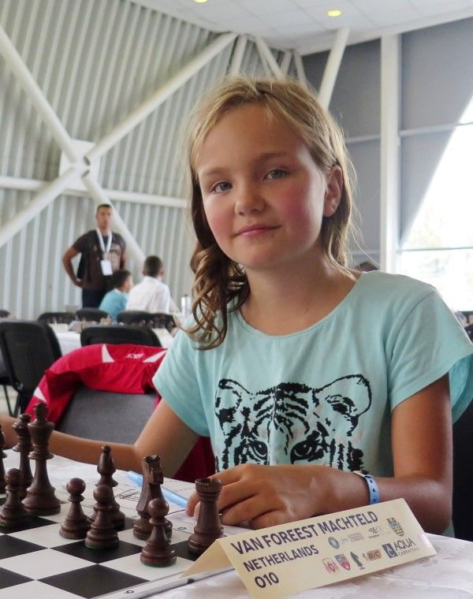
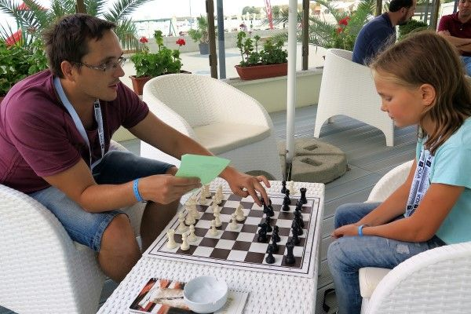
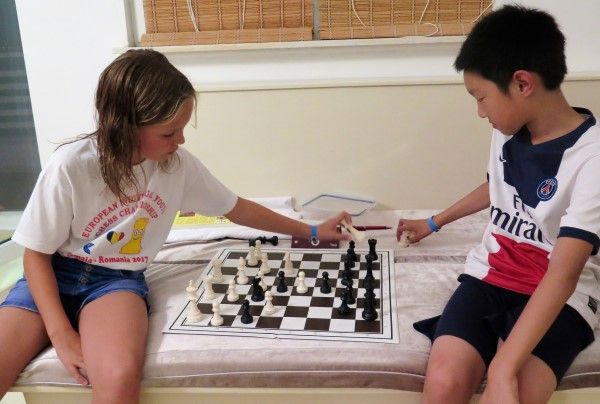

Europees Kampioenschap Schaken 2017!!Van 5/ t/m 14 september heb ik het Europees kampioenschap schaken in Mamaia gespeeld. We vertrokken een dag eerder op 4 september. Die dag moest ikal om 6 uur opstaan, behoorlijk vroeg! Mijn vader bracht mij samen met Sipke naar het station. Toen zei ik doei tegen mijn vader, en ging ik samen met Sipke in de trein naar Schiphol. Na een lange treinreis kwamen we eindelijk aan op Schiphol, waar de andere deelnemers en trainers al waren. Ik was best bang om te vliegen, maar voordat we mochten vliegen moesten we langs allemaal stomme controles. Uiteindelijk kwamen we toch in het vliegtuig. De vlucht was niet echt leuk, maar gelukkig ging alles goed! Na de vlucht, en aangekomen in Roemenië, was het weer wel een stuk warmer dan in Nederland! Helaas waren we nog niet in Mamaia, we moesten eerst nog met de bus. Drie uur en ook nog eens een uur file! Pas om 10 uur s'avonds kwamen we in het hotel aan, en dan zou je denken: tijd om even lekker te slapen na deze lange reis. Maar daarvoor ging ik eerst nog even avondeten, want na deze lange reis had ik toch veel honger. Het eten in het hotel was al op, en daarom gingen we naar een pizzeria.  Foto's gemaakt door Zhaoqin Peng Ik had een kamer met drie andere meisjes. De meisjes die bij mij sliepen waren ontzettend aardig. We hadden eerst een superleuke kamer met een hele grote bank. Maar toen moesten we helaas ruilen van hotelkamer met de jongens. Er waren niet genoeg bedden voor iedereen dus moesten we op slaapbanken slapen. De jongens hadden een kleinere slaapbank en jongens zijn langer dus zij kregen onze kamer. Het bed was heel hard en sliep niet fijn. De volgende dag begon het toernooi. We gingen met de bus naar de speelzaal, dat duurde ongeveer een half uur. De eerste ronde was best moeilijk maar gelukkig heb ik gewonnen. Daarna ging ik de partij analyseren met Sipke en daarna terug naar het hotel. Na de partij gingen we altijd zwemmen. Er waren verschillende zwembaden bij het hotel. Er was een bad met heel warm water, en een met heel koud water en een met normaal water. De zee was ook heel dichtbij maar daar heb ik niet gezwommen. Daarna gingen we met iedereen eten in het hotel. Het eten was niet superlekker maar prima. Bij het eten kon je veel sla, brood en vlees kiezen. Ik at bijna iedere kip en spaghetti of kebab. 's Ochtends ging ik altijd voorbereiden met Sipke. Hij keek in de database wat mijn tegenstanders spelen en maakte dan een file voor mij. Die gingen we bespreken tijdens de voorbereiding en daarna ging ik de file nog zelf herhalen. Analyse met Sipke Ernst Ik oefende iedere ochtend ook taktiek voor de partij. De tweede en derde ronde gingen helaas niet goed, ik verloor beide partijen Erg jammer. Gelukkig won ik de vierde en vijfde ronde. De eerste vier ronden had ik alleen maar tegen Roemenen gespeeld. In totaal waren er 39 Roemenen onder de 143 deelnemers. Daarna was er een rustdag. Op de rustdag was een voetbaltoernooi met andere landen. Ik ging al snel weg bij het voetbaltoernooi want het was veel te warm om te voetballen. Daarom ging ik weer lekker zwemmen. Verder ging ik veel rusten op de rustdag want ik was best moe. Partijen spelen met andere kinderen De zesde ronde speelde ik weer tegen een Roemeen en won ik snel. De zevende ronde stond ik eerst gewonnen maar ik maakte teveel fouten zodat ik zelfs verloren kwam te staan. Uiteindelijk werd het remise. De achtste ronde won ik makkelijk. De laatste ronde speelde ik tegen iemand uit Denemarken en won ik een mooie partij. Uiteindelijk heb ik 6.5 punt uit 9 gehaald en ben ik geeindigd als gedeeld achtste. Ik ben niet echt tevreden, maar vond het erg leuk om mee te doen. Volgend jaar wil ik graag hoger eindigen! |